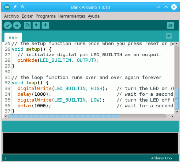
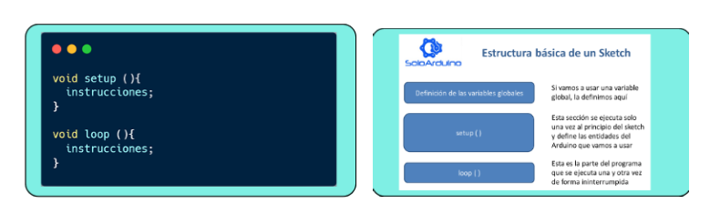

Plataforma de Arduino IDE.
Arduino IDE es una plataforma de desarrollo que permite programar microcontroladores a través de un lenguaje basado en C++. En el entorno educativo, su interfaz sencilla y su enfoque en la programación por bloques o texto ayudan a los estudiantes a iniciarse en la lógica computacional sin requerir conocimientos avanzados previos. Como señalan (Fernández, 2025), esta plataforma permite diseñar programas simples en los que se activan sensores, luces o motores, convirtiendo la programación en una experiencia tangible y significativa que fortalece la comprensión de causas y efectos.

Elementos de ARDUINO IDE
Editor de código:
Área donde se escribe el programa o “sketch” en lenguaje basado en C/C + + simplificado.
Consola de ventana de salida:
Muestra mensajes del compilador, errores, advertencias y el proceso de carga del programa a la placa.
Botones principales:
Verificar/Compilar: Revisa que el código no tenga errores y lo compila.
Subir: Carga el programa compilado a la placa Arduino conectada.
Nuevo: Crea un nuevo sketch.
Abrir: Permite abrir sketches guardados.
Guardar: Guarda el sketch actual.
Menú de configuración
Selección de la placa Arduino que se está usando (por ejemplo, Arduino Uno, Mega, Nano).
Selección del puerto serial para comunicar el IDE con la placa.
Preferencias para configurar la visibilidad de números de línea, advertencias del compilador, ruta de trabajo, entre otros.
Monitor serial
Herramienta integrada que permite enviar y recibir datos en tiempo real entre la computadora y la placa Arduino, útil para depurar y visualizar datos de sensores o estados del programa.
Estructura básica de un programa en Arduino IDE
